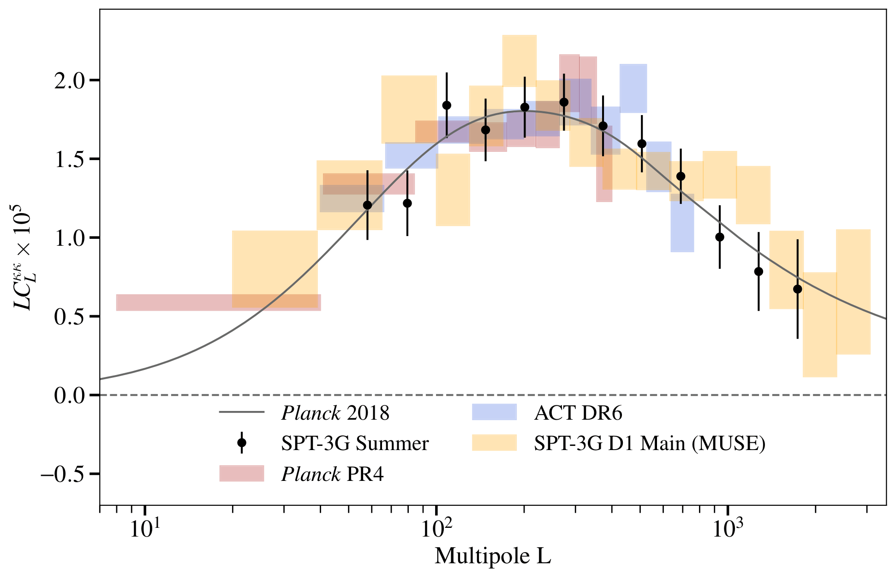
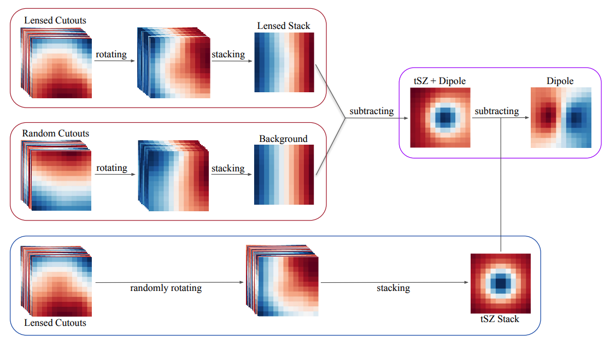

Work
A selection of my research and industry experience.
Doctoral Researcher, Astrophysics
As part of the South Pole Telescope (SPT-3G) Collaboration, I worked on gravitational lensing of the cosmic microwave background. I led the development of two end-to-end Python pipelines: one that reconstructs and statistically characterizes the Universe's matter distribution from a new SPT-3G dataset, and one that extracts unbiased galaxy-cluster mass estimates from millimeter-wave data and improved measurement precision by about 2× when applied to survey data. Along the way I used maximum-likelihood estimation, jackknife resampling and chi-square/PTE statistics, and designed a comprehensive suite of systematic tests to make the results robust and reproducible.
CMB Lensing Reconstruction Using Two Years of Temperature Data from the SPT-3G Summer Survey
The first reconstruction of the lensing signal from the SPT-3G Summer survey, covering about 2,640 deg² across three fields, with a lensing amplitude of 1.015 ± 0.053 relative to the Planck 2018 prediction.

A Foreground-Immune CMB-Cluster Lensing Estimator
A cluster-lensing estimator that stays robust to thermal and kinematic Sunyaev-Zel'dovich contamination, with a signal-to-noise competitive with other temperature-based and polarization-based approaches.

BI Developer
Used SQL to build and maintain database views integrated with the company's ERP platform, and developed dashboards and charts to track financial, buying and selling KPIs across the client base. Worked directly with clients, on-site and over calls, to gather requirements and customize each dashboard to their needs.